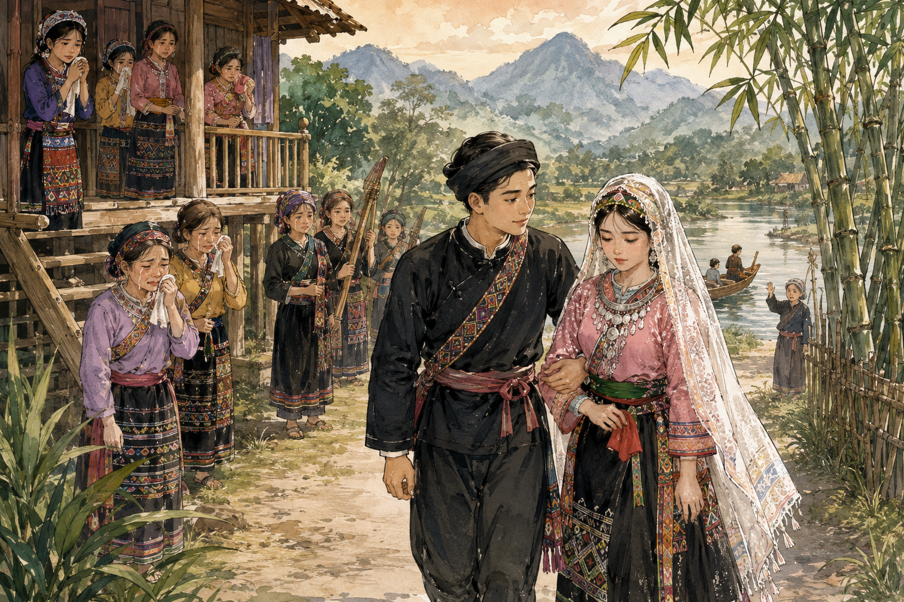

“Tình yêu đôi lứa từ muôn đời vẫn luôn là bản tình ca đẹp đẽ nhưng cũng lắm éo le. Khi hoàn cảnh nghiệt ngã chia cắt đôi uyên ương, tiếng lòng của người ở lại đưa tiễn người yêu về làm dâu nhà khác sẽ vang lên da diết, xé lòng đến nhường nào? Hãy cùng bước vào không gian văn hoá núi rừng Tây Bắc để lắng nghe khúc ca thuỷ chung bất diệt qua đoạn trích Lời tiễn dặn.”
🖐️ Hoạt động thảo luận & Khám phá ban đầu:
Gợi ý hướng dẫn:
• Khái niệm truyện thơ: Thuộc loại hình tự sự, có cốt truyện, câu chuyện, nhân vật, lời kể,... nhưng được thể hiện dưới hình thức thơ. Với dung lượng tương đối lớn, truyện thơ bao quát nhiều sự kiện, con người, chi tiết sinh động của đời sống thường nhật. Cảm hứng thế sự nổi trội hơn cảm hứng lịch sử.
• Đặc điểm truyện thơ dân gian:
Bảng thống kê một số truyện thơ dân gian tiêu biểu của các dân tộc thiểu số Việt Nam:
| Dân tộc | Các tác phẩm truyện thơ dân gian tiêu biểu |
|---|---|
| Tày, Nùng | Nam Kim – Thị Đan; Trần Chân; Quảng Tân – Ngọc Lương; Kim Quế; Chuyện chim sáo; Vượt biển;... |
| Thái | Tiễn dặn người yêu; Chàng Lú – nàng Ủa; Khăm Panh;... |
| Mường | Út Lót – Hồ Liêu; Nàng Nga – Hai Mối; Nàng Ờm – chàng Bồng Hương;... |
| Mông | Tiếng hát làm dâu; Nhàng Dợ – Chà Tăng;... |
| Chăm | Hoàng tử Um Rup và cô gái chăn dê; Têva Mưnô;... |
| Khơ-me | Si Thạch; Tum Tiêu;... |
• Đặc trưng thơ trữ tình: Ưu tiên hàng đầu cho việc thể hiện cảm xúc, tâm trạng của nhân vật trữ tình.
• Vai trò của yếu tố tự sự: Trong bài thơ trữ tình có yếu tố tự sự, bóng dáng của câu chuyện, sự kiện giữ vai trò làm nền cho tiếng nói trữ tình và chịu sự chi phối của mạch cảm xúc. Câu chuyện được “kể” ở mức độ vừa đủ để cảm xúc của tác giả bộc lộ trọn vẹn nhất.
Chàng trai và cô gái người Thái yêu nhau tha thiết từ thuở nhỏ nhưng vì cha mẹ cô gái chê chàng trai nghèo nên ép gả con cho một gia đình giàu có nhưng tàn nhẫn. Ngày cô gái cất bước về làm dâu nhà khác, chàng trai quyết định đi theo trong vai người đưa tiễn để được ở bên, an ủi và nói lời thề nguyện sắt son.
(Bản dịch của Mạc Phi, in trong Tiễn dặn người yêu – Xống chụ xon xao, NXB Văn học, Hà Nội, 1973).

“Quẩy gánh qua đồng rộng,
Người đẹp anh yêu cất bước theo chồng.
Vừa đi vừa ngoảnh lại,
Vừa đi vừa ngoái trông,
Chân bước xa lòng càng đau nhớ.
Em tới rừng ớt ngắt lá ớt ngồi chờ,
Tới rừng cà ngắt lá cà ngồi đợi,
Tới rừng lá ngón ngóng trông...
...
Con nhỏ hãy đưa anh ẵm,
Bé xinh hãy đưa anh bồng,
Cho anh bế con dòng đừng ngượng,
Nựng con rồng, con phượng đừng buồn.
...
Không lấy được nhau mùa hạ, ta sẽ lấy nhau mùa đông,
Không lấy được nhau thời trẻ, ta sẽ lấy nhau khi goá bụa về già.”
❓ Câu hỏi đọc hiểu 1 (Thẻ đọc trang 103):
Hình dung về bối cảnh câu chuyện và chú ý cách diễn tả đầy hình ảnh về tâm trạng của cô gái trên đường về nhà chồng qua các chi tiết: “vừa đi vừa ngoảnh lại”, “ngắt lá ớt, lá cà, lá ngón”.
Trả lời:
❓ Câu hỏi đọc hiểu 2 (Thẻ đọc trang 103):
Chú ý cách cư xử khác thường nhưng hoàn toàn hợp lí của chàng trai khi dặn dò người yêu (xin được kề vóc mảnh, ẵm bồng con của người yêu).
Trả lời:
Cách cư xử của chàng trai tưởng như khác thường (đòi kề vai, bế ẵm đứa con riêng của người yêu với chồng mới, gọi đứa bé là “con dòng”, “con rồng, con phượng”) nhưng lại hoàn toàn hợp lí vì xuất phát từ tình yêu thương bao dung, vị tha và trân trọng tuyệt đối. Trong mắt chàng, tất cả những gì thuộc về người mình yêu đều cao quý, đẹp đẽ. Chàng không hề ghen tuông, trách móc mà chỉ muốn san sẻ nỗi tủi hờn, ngượng ngùng với người yêu.
Đoạn thơ khắc hoạ sâu sắc nỗi đau đớn, dùng dằng của đôi lứa trong cuộc chia li ngang trái. Lời thề hẹn “Không lấy được nhau mùa hạ, ta sẽ lấy nhau mùa đông / Không lấy được nhau thời trẻ, ta sẽ lấy nhau khi goá bụa về già” khẳng định khát vọng đoàn tụ bền bỉ, vượt qua mọi giới hạn của thời gian và tuổi tác.
“Dậy đi em, dậy đi em ơi!
Dậy rũ áo kẻo bọ,
Dậy phủi áo kẻo lấm!
Đầu bù anh chải cho,
Tóc rối đưa anh búi hộ!”
Anh chặt tre về đốt gióng đầu,
Chặt tre dày, anh hun gióng giữa,
Lam ống thuốc này em uống khỏi đau.
...
Chết ba năm hình còn treo đó;
Chết thành sông, vục nước uống mát lòng,
Chết thành đất, mọc dây trầu xanh thắm,
Chết thành bèo, ta trôi nổi ao chung,
Chết thành muôi, ta múc xuống cùng bát,
Chết thành hồn, chung một mái, song song.
...
Yêu nhau, yêu trọn đời gỗ cứng,
Yêu nhau, yêu trọn kiếp đến già,
Ta yêu nhau tàn đời gió, không rung không chuyển,
Người xiểm xui không ngoảnh, không nghe.”
❓ Câu hỏi đọc hiểu 3 (Thẻ đọc trang 104):
Cảm nhận niềm thương xót của chàng trai khi chứng kiến tình cảnh của người yêu ở nhà chồng.
Trả lời:
Khi chứng kiến cô gái bị nhà chồng đánh đập tàn nhẫn đến ngất đi, quần áo lấm lem, đầu bù tóc rối, tiếng gọi “Dậy đi em, dậy đi em ơi!” vang lên đầy hốt hoảng, đau đớn. Chàng trai ân cần chăm sóc từng li từng tí (chải tóc, búi tóc, chặt tre lam ống thuốc chữa đau) và mong muốn “gỡ tơ rối”, “quay lại guồng gỗ tốt” để đưa nàng về với cuộc sống hạnh phúc thuở ban đầu.
❓ Câu hỏi đọc hiểu 4 (Thẻ đọc trang 105):
Lời thề nguyền thuỷ chung của chàng trai được diễn tả như thế nào qua các hình ảnh thiên nhiên và sự vật gần gũi?
Trả lời:
Đoạn thơ là đỉnh cao của tiếng nói trữ tình hoà quyện trong mạch tự sự. Với ngôn ngữ giàu hình ảnh, lối ví von mộc mạc đậm tư duy người Thái và nhịp điệu dồn dập, thiết tha, đoạn trích ngợi ca vẻ đẹp của tình yêu thuỷ chung, khát vọng giải phóng con người khỏi những hủ tục phong kiến lạc hậu.
Tiễn dặn người yêu (tiếng Thái là Xống chụ xon xao) gồm 1.846 câu thơ, là kiệt tác truyện thơ dân gian của dân tộc Thái. Tác phẩm được đồng bào Thái vô cùng yêu quý, thường được hát lên trong các buổi sinh hoạt văn hoá cộng đồng, trở thành tiếng nói phản kháng mạnh mẽ chế độ hôn nhân gả bán xưa.
Vận dụng kiến thức về sự kết hợp giữa yếu tố tự sự và trữ tình để phân tích một đoạn trích truyện thơ dân gian khác (như Tiếng hát làm dâu hoặc Chàng Lú – nàng Ủa), từ đó viết đoạn văn bày tỏ suy nghĩ về giá trị của lòng thuỷ chung trong tình yêu.
Khi phân tích truyện thơ dân gian, cần chú ý mạch kể chuyện (người đưa tiễn – người được tiễn) chỉ đóng vai trò làm điểm tựa để bộc lộ dòng tâm trạng dạt dào của nhân vật. Không nên tách rời nội dung tự sự khỏi giọng điệu trữ tình da diết của tác phẩm.
Trả lời chính xác 10 câu hỏi trắc nghiệm (mức độ Biết – Hiểu – Vận dụng thấp) để giành giải thưởng 150.000.000 VNĐ!
📝 Bài tập phân tích 1:
Phân tích tâm trạng và hành động của nhân vật cô gái trên đường về nhà chồng trong phần 1 của đoạn trích Lời tiễn dặn. Qua đó, em cảm nhận được điều gì về bi kịch của người phụ nữ trong xã hội xưa?
📝 Bài tập phân tích 2:
Phân tích vẻ đẹp tâm hồn của nhân vật chàng trai qua những lời tiễn dặn và thề nguyện trong đoạn trích.
📝 Bài tập phân tích 3:
Làm rõ sự kết hợp hài hoà giữa yếu tố tự sự và yếu tố trữ tình trong đoạn trích Lời tiễn dặn. Sự kết hợp ấy mang lại hiệu quả nghệ thuật như thế nào?